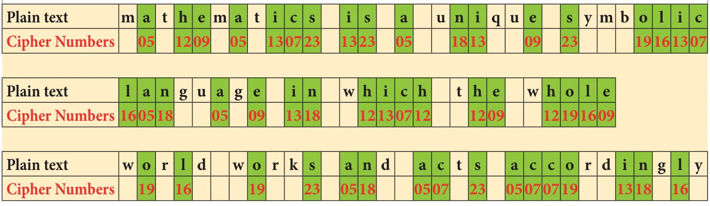
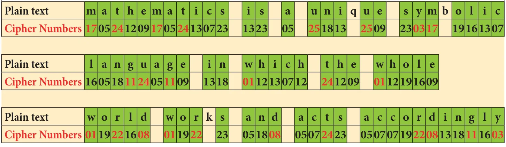
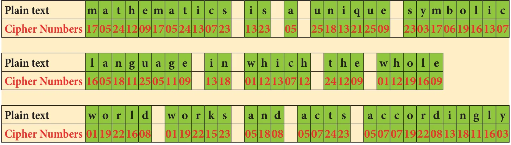
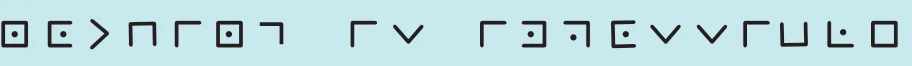

In today's world, security in information is a fundamental necessity not only for military and political departments but also for private communication. Today's world of communication has increased the importance of financial data exchange, image processing, biometrics and e-commerce transaction which in turn has made data security an important issue. Cryptology is defined as the science which is concerned with communication in secured form.
7.7.1 Cryptology - Some technical details

Plain text: The original message is called plain text.
Cipher text or Cipher number: The encrypted output (converted message into code) is called Cipher text or Cipher number. Cipher text is written in capital letters, while plain text is usually written in lowercase. A secret key is to use something to generate the Cipher text from the plain text.
Encryption and Decryption: The process of converting the plain text to the Cipher text is called encryption and the vice versa is called decryption.
Let us try to create some Cipher text that we use in the form of coded message at some point in our real life.
7.7.2 Examples of Cipher Code
1. Shifting Cypher Text
Ceasar Cipher
The Ceasar Cipher is one of the earliest known and simplest ciphers. It is a type of substitution cipher in which each letter in the text is "shifted" a certain number of places down the alphabets.
To pass an encrypted message from one person to another, it is first necessary that both parties have the 'key' for the cipher, so that the sender may encrypt it and the receiver may decrypt it. For the Caesar Cipher, the "key" is the number of characters to shift the cipher alphabet. So, we have to know how big the switch is to break the code.
Let us know about more Ciphers from the following examples and situations.
Example 7.8
Use Ceasar Cipher table set +4 and try to solve the given secret sentence.
fvieo mr gshiw ger fi xvmgoc
Solution:
Let us make Ceasar Cipher table first. Here, we have to set to +4 table. For that, we have to start letter e to set as A, f as B ... likewise d as Z. Now, the +4 Ceasar Cipher table looks like
| Plain Text | a | b | c | d | e | f | g | h | i | j | k | l | m | n | o | p | q | r | s | t | u | v | w | x | y | z |
| Cipher Text | W | X | Y | Z | A | B | C | D | E | F | G | H | I | J | K | L | M | N | O | P | Q | R | S | T | U | V |
The given plain text is
fvieo mr gshiw ger fi xvmgoc
To crack this secret code, follow the steps given below.
Step 1: Using Ceasar Cipher table, let us first match the most repeated letters. This will help us to progress faster.
f v i e o m r g s h i w g e r f i x v m g o c
B R E A K I N C _ _ E _ C A N B E _ R I C K _
Step 2: Then, let us find remaining letters to complete the code.
f v i e o m r g s h i w g e r f i x v m g o c
B R E A K I N C O D E S C A N B E T R I C K Y
Thus, the secret sentence is decoded as, BREAK IN CODES CAN BE TRICKY
2. Substituting Cypher Text
Each letter in a text is "substituted" by certain pictures and symbols, a key message, group of words, letters or a combination of these can be used to encode or decode the information. Let us learn more from the following situation.
Situation:
The teacher divides the class into two teams and displays a worksheet given in the figure below for students to complete. Play a game, teams take turns suggesting letter substitutions and someone entering your suggestions in the table. Teams earn points for correct letter guesses.
Worksheet 1 :- Additive Cipher [key = 5]
Convert a given plain text into Additive Cipher text (number) code.
"mathematics is a unique symbolic language in which the whole world works and acts accordingly."
Tips for cracking additive ciphers:
- Especially for additive Ciphers, you only need key number. You can complete the cipher table by filling in the rest of the numbers in order.
- If you can, find and make frequency table for alphabets, it is help you to get started.
- Match the most repeated letters first and fill the Cipher number.
- Look for familiar one-letter words like a or i. common two and three letter words like of, to, in, it, at, the, and, for, you .....
- Look for consecutive numbers in the Cipher text and match them with possible consecutive letters in the plain text.
Now, to start converting a plain text into Cipher number, first we have to make a cipher table as shown below. Here there key is 5. As per key number, we have to start and fill a = 05, b = 06 ........ z = 04 respectively.
| Plain Text | a | b | c | d | e | f | g | h | i | j | k | l | m | n | o | p | q | r | s | t | u | v | w | x | y | z |
| Numbers | 00 | 01 | 02 | 03 | 04 | 05 | 06 | 07 | 08 | 09 | 10 | 11 | 12 | 13 | 14 | 15 | 16 | 17 | 18 | 19 | 20 | 21 | 22 | 23 | 24 | 25 |
| Cipher Numbers | 05 | 06 | 07 | 08 | 09 | 10 | 11 | 12 | 13 | 14 | 15 | 16 | 17 | 18 | 19 | 20 | 21 | 22 | 23 | 24 | 25 | 00 | 01 | 02 | 03 | 04 |
To start encoding the text, let us count the frequency of alphabets and frame frequency table as shown below.

With the help of Cipher table and frequency table, let us fill the Cipher numbers for the plain text. Let us first match the most repeated letters (5 times and above), then 2 to 4 times repeated letters and finally remaining letters step by step as shown in given figure.
Step 1: Cipher number for most repeated letters (5 times and above)

Step 2: Cipher number for most repeated letters (2 times and above)

Step 3: Cipher numbers for non-repeated letters

Thus, the Additive Cipher text for plain text is as follows:
"17 05 24 12 09 17 05 24 13 07 23 13 23 05 25 18 13 21 25 09 23 03 17 06 19 16 13 07
16 05 18 11 25 05 11 09 13 08 01 12 13 07 12 24 12 09 01 12 19 16 09 01 19 22 16 08
01 19 22 15 23 05 18 08 05 07 24 23 05 07 07 19 22 08 13 18 11 16 03"


Try these
- Use Pigpen Cipher code and write the code for your name ________ and your chapter names
(i) LIFE MATHEMATICS (ii) ALGEBRA
(iii) GEOMETRY (iv) INFORMATION PROCESSING
- Decode the following Shifting and Substituting secret codes given below. Which one is easier for you?
(i) Shifting method:- M N S G H M F H R H L O N R R H A K D
(ii) Substituting method:-

- Write a short message to a friend and get him to decipher it.(use either shifting or substituting code method)